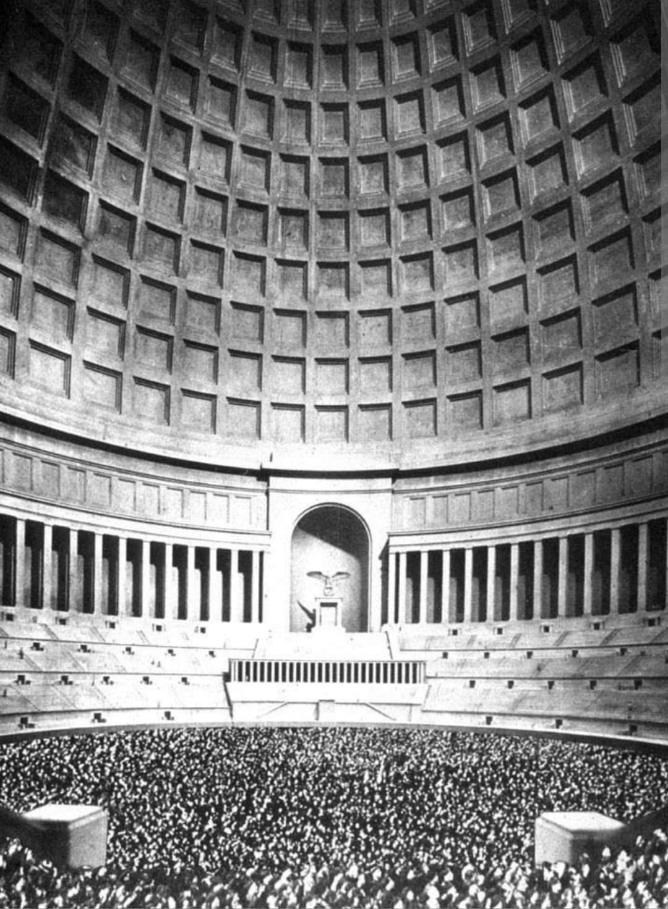
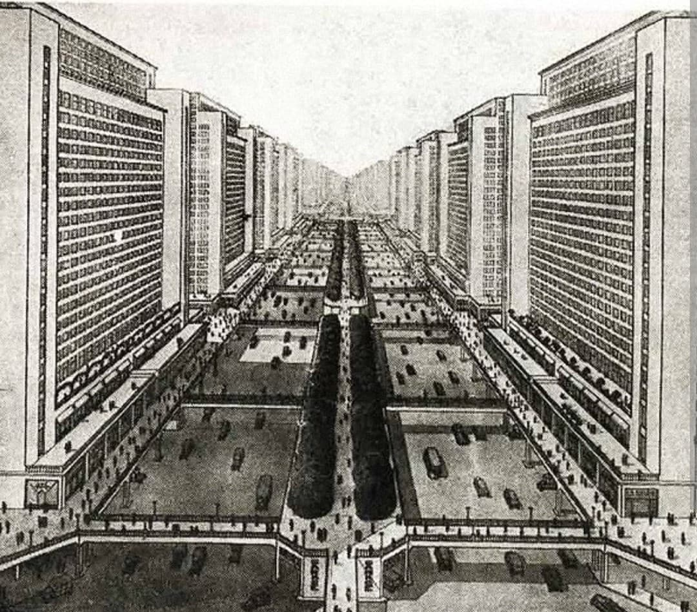
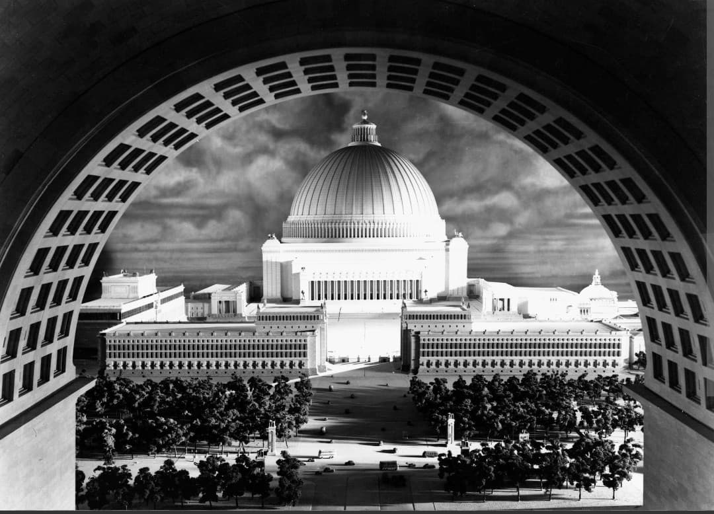
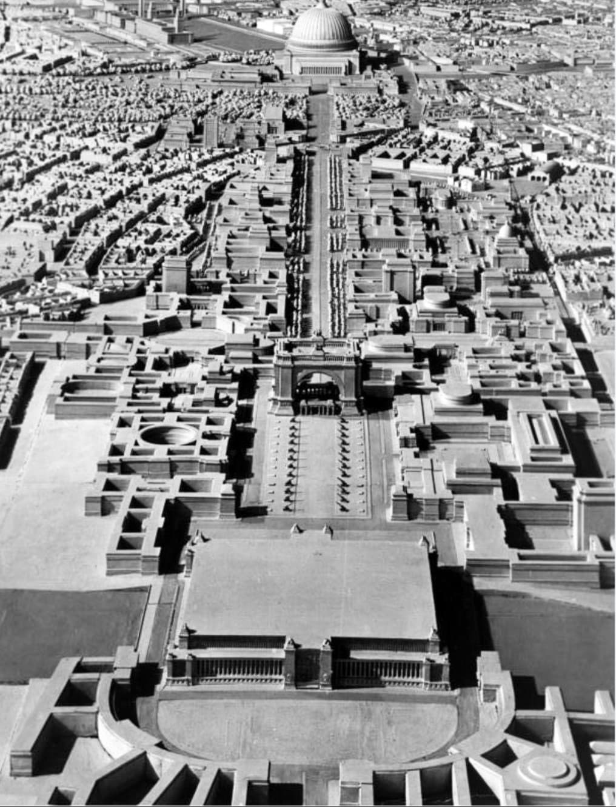

Germania est le nom donné au projet titanesque d’Hitler visant à transformer Berlin en capitale mondiale du Reich. Pensée pour symboliser la puissance nazie, cette ville devait être reconstruite entièrement selon les plans d’Albert Speer, architecte du régime. Le projet, commencé avant 1942, ne sera jamais achevé en raison de la guerre.
Présenté uniquement à des fins historiques.
▶ Voir la vidéo – Germania : la nouvelle capitale nazieHitler souhaite créer une capitale à la hauteur de son ambition : un Reich dominant l’Europe et destiné à durer mille ans. Berlin doit être entièrement remodelée pour devenir Welthauptstadt Germania, la « capitale mondiale Germania ».
Le projet est confié à Albert Speer, qui élabore des plans gigantesques, mêlant architecture néoclassique, gigantisme et propagande monumentale.
Le bâtiment central du projet est le Volkshalle, une salle colossale destinée aux discours d’Hitler. Ses dimensions prévues sont impressionnantes :
– 290 mètres de hauteur
– 250 mètres de diamètre
– capacité d’environ 180 000 personnes
– un dôme 16 fois plus grand que celui du Panthéon
Ce monument devait symboliser la puissance absolue du Reich.

Une avenue monumentale de 7 kilomètres devait traverser Germania. Elle était pensée pour :
– accueillir des parades militaires
– être bordée de bâtiments gigantesques
– écraser le visiteur par sa taille
Cette avenue était la colonne vertébrale de la nouvelle capitale.

Hitler voulait un arc de triomphe plus grand que celui de Paris :
– 117 mètres de haut
– 170 mètres de large
Il devait célébrer les « victoires » du Reich et devenir un symbole de domination.

Pour construire Germania, Hitler prévoyait :
– la destruction de quartiers entiers
– l’expulsion de milliers d’habitants
– la reconstruction totale du centre-ville
– la transformation de Berlin en capitale impériale
Les nazis ont commencé certains travaux avant 1942.

Le projet Germania est stoppé en 1943 en raison :
– du manque de matériaux
– des bombardements alliés
– de la guerre contre l’URSS
– de la défaite militaire
Germania restera un projet inachevé, symbole de la mégalomanie du régime nazi.